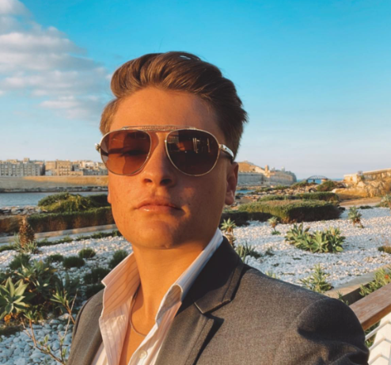

Lucas Galea
Games Lobby Coordinator at Betsson Group
About me:
Passionate and dedicated Games Lobby Coordinator with a positive attitude. Knowledgable and experienced within the iGaming industry with an ambition to grow. Strong communication skills, problem solving, multitasking and efficieny. Specialize in quality, speed and process optimization along with developing and executing projects. Articulate and result driven with a passion for developing relationships with stake holders along with being a huge team player that contributes to the growth and success of the business.
Work Experience :
Games Lobby Coordinator
- Be responsible for maintaining all our lobbies, on all our brands and markets daily, from supporting releasing new games to updating existing lobbies, as well as rolling out new categories and product improvements
- Build and develop existing data models and workflows to maximise efficiency and improve our product offering
- Gathering competitor insights and gap analysis together with the Gaming Content Optimisation Manager, ensuring we as a group are always alert of current market trends
- Be a key expert when it comes to our content systems, and the processes always required to ensure strong delivery from a product perspective
- Managing escalations from other departments and reporting such queries to the respective parties, both internally and externally
- Form a strong working relationship with the commercial teams and our suppliers, in order to ensure the most optimal content optimisation
Content Execution Coordinator
- Coordinating and executing all content updates needed for new site launches, new markets, site migrations and the launch of new product features.
- Coordinating translations and uploading of all content to Content Management System.
- Websites testing prior to any release to ensure that all content is displayed correctly on site
- Keeping the project status and documentation updated.
Customer Service Representative
- Maintaining a positive, empathetic, and professional attitude toward customers at all times.
- Communicating with customers through various channels.
- Knowing our products inside and out so that you can answer questions.
- Providing feedback on the efficiency of the customer service process.
Education :
A Levels Studied
- Mathematics
- Physics
- English
- Technical Drawing
- Phsycology